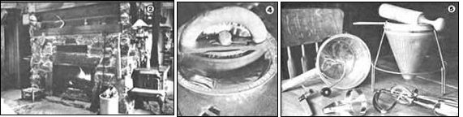
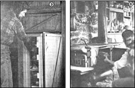
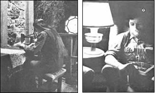

Careful planning turns a lack of electricity into the basis for a pleasant way of life.
Five years ago my husband (Scott) and I purchased 31 acres in the Ozarks, and immediately started working toward the lifestyle that we had long been fantasizing about and planning for.
We bought our land with the full knowledge that we would never be able to hook up to a power company's grid. A national wilderness area borders us on three sides, you see, and the nearest electrical pole on the property's accessible side is more than a mile away. Furthermore, there are numerous vertical rock ledges and a year-round stream between our home and that lone pole . . . and we would never consider destroying the beauty of the glades and brook with a big, cleared powerline right-of-way!
One and a half years after our land purchase, Scott and I moved into an octagonal, square-beamed home that we'd built ourselves . . . with hand tools. And just before that happy event, we had an electrical-appliance garage sale . . . during which we parted with our television, iron, hair dryer, toaster, blender, and various other gadgets we've long since forgotten (and haven't missed).
Now you probably wonder how we get along without such "conveniences". Well, it's not complicated at all: We've replaced electricity with kerosene, propane gas, wood, a car battery, and the heating and cooling properties of the thermal mass in our house.
Mantle-type Aladdin kerosene lanterns provide us with illumination for evening reading and work, for instance. Five of these - two in the living room and three in the kitchen - give off plenty of white light (which is also easy on our eyes when we're doing close work). Throughout the rest of the house, standard kerosene wick lamps produce a soothing yellow glow. Our lighting system probably isn't any less expensive than electrical lamps would be, but it does create a mellower atmosphere and isn't subject to the potential brownouts and blackouts (and pricing whims) of a power company.
During the day our many windows and two skylights provide plenty of light, since - when we designed the house - we were careful to base the placement of the openings on the daily and seasonal positions of the sun. The kitchen (which is the most important room for us) stays bright and cheerful all day long as a result of its southwestern exposure. And there isn't any problem with excessive summer heat buildup, because our home is nestled in the trees, and their leaves filter the sun during the intensely hot months.
We heat with wood, using a fireplace with a Heatform insert built into it. Most such "appliances" are fitted with electric fans to move the warm air, but we simply built the fireplace in the center of the house and installed vents on four sides of the massive rock chamber. This system directs heat into the living room, bedroom, bathroom, and kitchen . . . and each of the rooms - in turn - has a floor vent near its outside wall, to return cool air to the fireplace. (Convection keeps the home's internal atmosphere circulating.)
I should point out, too, that our fireplace's mass acts as an indirect heating and cooling system. In cold weather the rock - all 400 cubic feet of it - heats up . . . after about the first 36 hours of continuous fire. The stone mass then remains warm to the touch all winter, and contributes to our comfort even when the fireplace is not in use. Likewise, in the summer the rock stays much cooler than the air and helps keep the inside temperature agreeable even in the dog days.
One of our skylights is also used for cooling purposes. In the summer we open the rooftop window every morning, and it's actually possible to feel the fresher outside air pour in the lower half of the opening as the warmer air pushes out through the top half. (Cool air is drawn in through the doors and lower windows too, of course.) Such thermal conditioning doesn't cost any money . . . doesn't make any noise . . . and, I'm sure, is more healthful than the conventional electric alternative.
For about eight months of the year, all our cooking is done on a woodstove. However, when the weather is too warm to allow us to comfortably fire up the range, we use propane to operate a small two burner stove. The same gas is used to run our water heater and our Swedish-made ammonia absorption refrigerator ... an extremely efficient unit that operates on a 600-BTU pilot light. (Our gas bills average about $10 a month, most of which we attribute to the water heater.)
Our cold and hot water tanks are in a "closet" in our loft area. We obtain H 2 0 by lifting it - with a gas pump - up to our elevated tanks. (All of our drinking water is boiled.) The house has complete plumbing, which is operated by gravity flow, and our water pressure is excellent!
We wired the house for DC current in the hope of someday producing a useful quantity of electricity with wind or water. Right now, a car battery powers - when we need them - two car lights that are mounted under a shelf above the kitchen sink . . . and also runs an FM car radio which we keep tucked away on the bookshelf. The battery is "topped up" about once a week, with a charger that we keep at a neighbor's place.
As you may have guessed by now, the fact that we've given up most of our powered appliances doesn't mean that we lack for kitchen tools. We find that our hand beater, chopper, food mill, and ricer can handle most food preparation and preservation chores. An 1890-model meat grinder (which is used to mince many edibles other than meat) and a grain grinder also stand handily at the counter's edge.
Such devices may not be as fast as their electrical counterparts, but they do get their respective jobs done! We also have an alternative garbage disposal system that's definitely more efficient than the electrically powered waste shredders: Our 20 Araucana and Australorp laying hens do a splendid job of disposing of kitchen scraps and give us beautiful, orange-yolked eggs in return.
During the winter months I sew a lot, using my old treadle machine (which I wouldn't give up even if we had electricity). The only time I iron is when I sew . . . and I have one of those un handy flatirons - which usually serve only as doorstops these days - that's heated atop the stove. (It isn't a joy to use, but it works!)
In addition, I suppose it would be difficult to find a modern household without at least one fancy hair dryer. However, our hair is "done" in a very few minutes if we comb it in front of the fire or in the sunshine. In fact, I've come to love such silent, meditative times . . . in contrast to performing the same task (usually in a frantic rush) with a noisy motor roaring in my ear.
The truth is that a nonelectrical house is a wonderfully quiet house. There's no refrigerator or furnace always clicking on and off, and our evenings are shared with a large selection of books and musical instruments, instead of being dominated by an intrusive television set.
We may go to a little extra trouble for our independence from the power company, but we hope to continue to simplify our alternative methods. In the meantime, Scott and I find a deep satisfaction in living this way . . . especially when someone says, "Gee, the power was off for hours during that last storm!"
"Really?" we respond. "We didn't miss it a bit!"
|
 PHOTOS BY SCOTT AND NANCY LAMB LEFT: The Lamb's massive fireplace. CENTER: Heating the iron in a piepan keeps the utensil's bottom clean. RIGHT: The ricer, food mill, hand beater, round food chopper, and hand can opener receive lots of use in the Lambs' nonelectric kitchen. |
 (PHOTOS BY SCOTT AND NANCY LAMBS) LEFT: Scott grabs bite from the extremeley efficient ammonia absorption refrigerator. RIGHT: The couple uses a woodstove for cooking during much of the year. |
 (PHOTOS BY SCOTT AND NANCY LAMB) LEFT: Nancy sews on a treadly sewing machine in a room lit by a skylight. RIGHT: An Alladin kerosene lamp is a good source of ""white"" light . . . which is easy on the eyes. |